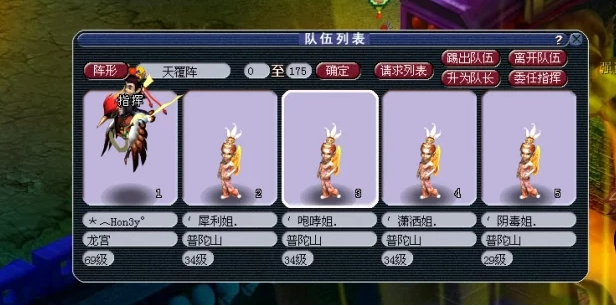
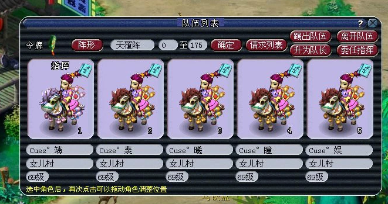
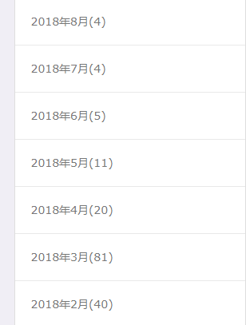
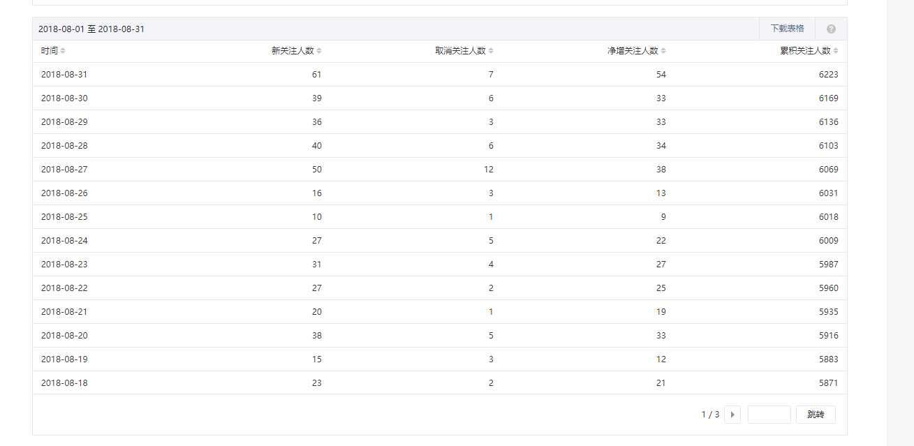
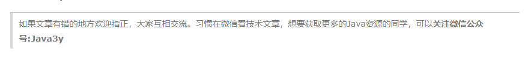
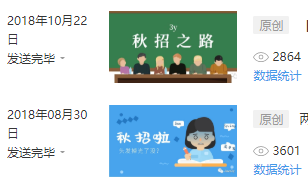
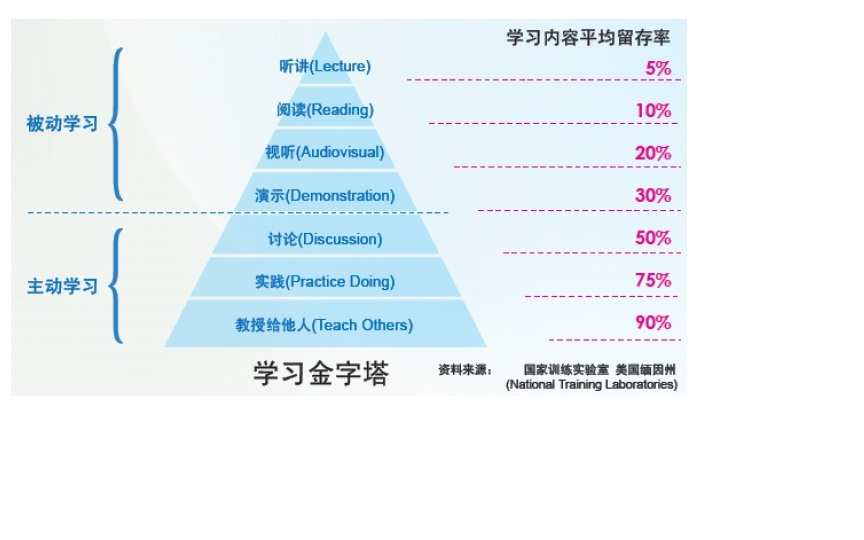
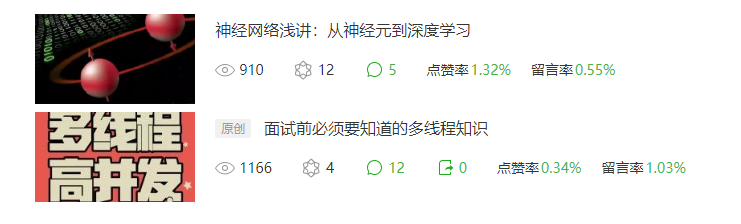
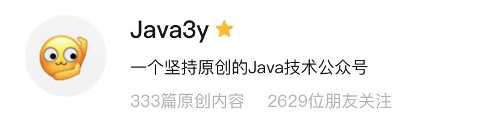

原文连接:https://www.cnblogs.com/Java3y/p/11861866.html
前言
只有光头才能变强。
文本已收录至我的GitHub精选文章，欢迎Star：https://github.com/ZhongFuCheng3y/3y
用Java3y这个ID发文章也有一年多的时间了，之前也有小伙伴很好奇为什么我叫3y，是跟真实名字有关吗？也有人叫我yyy
- 也有小伙伴猜测：yyy，每天多问自己why why why
- ...
在这里我简单来个自我介绍。认识一下我，认识一下我的公众号。
一、为什么我叫3y
我在小学的时候喜欢玩的一款游戏叫做梦幻西游，这款游戏我一直玩到高二。在初中的时候，我姐姐帮我新建了一个角色，取了名字叫做Hon3y。当时还是一个非主流的时代，喜欢用颜文字、火星文、各种符号来展现个性的自己。

显然，这个名字真正的意思是Honey，e能通过一定的旋转可以看起来像3。
梦幻西游在前期这款游戏的乐趣就在于有一个比较好的社交系统，你能在玩游戏的时候认识到各种朋友。而我的网友们都不约而同叫我3y，于是我就成了3y。
在最开始时，我的博客名也取为Hon3y，但我从大学时就喜欢上极简。在我想把在公众号发文时，我是想把公众号的名字取为3y，但是很多的博客平台都不让取这么简短的名字（我是想把所有博客平台的名称取同一个的）。于是我想了一下，我是搞Java的，要不就叫Java3y吧。

二、我的头像
我的微信公众号和微信头像都是同一个：
为什么用这个头像呢？当时是因为跟女朋友聊天的时候，她觉得这个表情很有意思，于是我就一直用了。
话说：这个头像还是挺特别挺吸引人的。很多看过我的文章的同学说看到这个头像就想起了我，哈哈~~
三、属于我自己的东西
名字是我姐姐取的(间接)，头像是我女朋友喜欢的。那有啥是属于我的呢？
我自己的原创文章在每篇文章的开头都会加上一句话：
只有光头才能变强。
用这句话的原因有两个：
- 程序员的梗：头发的稀疏程度是实力的认证。
- 比较喜欢《一拳超人》漫画，主角就是光头的，同时他也是最强的。
在"只有光头才能变强" 后面，我还会加上我的GitHub地址
文本已收录至我的GitHub精选文章，欢迎Star：https://github.com/ZhongFuCheng3y/3y
这个GitHub我个人维护了一段时间了，这也能单独拿出来讲讲：
- 从我发现我的文章越来越多的时候，我就得需要一个文章导航页去检索我自己的文章。我的文章是各个平台分发的嘛，最开始的是依赖一些平台的搜索引擎来检索自己的文章
- 然而，这并不好用。于是我想：那我自己可以维护一个属于自己的文章导航啊。从上面也可以得知我是一个喜欢极简的人，我不允许我的文章导航有任何广告。当时选取了”Bitcron“这个博客平台承载我的文章导航页。
- 再后来，发现写完文章再上传到其博客平台上有点麻烦(那平台也是收费的)，那时我就想：要不丢到GitHub上吧？还支持Git呢，又免费
- 于是直至现在就一直在维护了，目前已经有
400+精选文章了
剩下最后的就是我文章的内容：朴素简单的文字
四、我的公众号
这个公众号是在2018年02月03日开始推送第一篇文章，在最开始的那段时间更新非常疯狂，原因有以下：
- 有部分的文章是我之前写过笔记，但没有好好整理，较为粗糙。那段时间把之前的文章给
review了一把（回顾自己学过的东西），在文章中加入自己的理解，形成一篇又一篇的博客。 - 我当时坚信我大三的暑假一定是要去找实习的，给自己几个月时间复习知识点。因为纯看面试题比较枯燥，总觉得少点东西，写博客可以让我对知识点有更加深刻的理解。
- 在学校天天没事干，在图书馆写写文章消磨下时间（自我感觉充实）
当时就有人对我说：“3y，你这一天一篇Java集合源码的文章啊”、“你是不是专职写文章的啊”、“卧槽，这更新频率，高产似母猪”。

2018年6~8月在家里附近找到了一份实习，于是就每天愉快工作，那段时间更新频率也自然降低了。截止2018年8月，通过我在各个平台发自己的文章，我的公众号积累到了6千左右的粉丝量。

当时完全没跟别的公众号做过互推，在公众号上也没做过任何的活动。当时就看自己的时间更新，号内100%的原创。在博客平台分发文章的时候也特别憨批，在文末随意加入一段引流的话：

其实我当初在刚开公众号的时候会想，有人会在手机上看技术文章的吗？反正我比较喜欢在电脑上看技术文章，因为手机的屏幕实在是太小了。于是在引流的时候还特别说明：习惯在微信看技术文章的同学可以关注我的公众号哦~
当时看着粉丝一天一天的涨，只要我有文章输出，那一般也能涨30以上的粉丝。粉丝的增长给我带来了什么？
- 当时流量主的开通是需要5000粉丝的，达到5000粉丝的以后我立马就去开了流量主，享受着每天一块、两块的收入（要知道，你放支付宝1W块也就1块钱，我现在不需要任何成本就能一天一块、两块）
- IOS微信公众号改版后，全面开放了赞赏功能。我当初第一次开放赞赏功能那篇文章得到了20块！那差不多是我一天在学校的生活费了！(当然了，后续就逐渐没了...)
- 鼓励，赞同，交流机会。当时公众号内全是原创，几乎没遇到暴躁老哥喷我，都是对我的鼓励，赞同。文章被指出错误时，能够跟有工作经验的开发者交流和修订文章的错误，再度学习。我当时就一度认为：程序员这个群体的素质应该比其他行业高不少。
8月底辞去实习的工作，全面备战秋招。当时秋招疯狂被虐，每天笔试/面试/牛客网讨论区/宣讲会来来回回，在8月底到秋招结束(10月中下)对公众号及博客平台没有任何的更新。

后来秋招完，就自然而然去学习一些自己想要学的技术了，也在继续更新着我的原创文章。到了2018年11月的时候，有了一个转折点；我发现公众号如果有流量了是可以赚钱的（周围的小伙伴都通过发广告来赚到自己的第一笔金，但那时我还在犹豫）
那时候有不少的广告商找到我要发广告，也不少的小伙伴找到我一起互推涨粉。在最开始我都拒绝了，因为我觉得我要保持全原创，这是我的公众号。
4.1 做公众号观念上的转变
在最开始时，我是为了用文字记录一下自己学习过的技术。当时记笔记十分粗糙，可能记完自己也不会去查，甚至觉得这不是我自己记的笔记。
当时初学时也读到很多很好的文章，会知道：“要写能让人看懂的文章是非常耗费时间的”，但还是有很多很多很多的开发者在输出优质的文章。
相信很多人就看过下面的图：要是你能把你学到的知识点教授给他人，那这个知识点很可能你就真学明白了。
我就想“他们行，那我应该也行”。于是我就开始以"教授"的方式来输出自己的笔记。在输出的文章的过程中也的确受到不少人的鼓励。自己的文字能帮助到别人，这是有自豪感的。
- 其实，我认为我自己是以一个分享者的身份来输出文章，而不是教授者
在写文章的过程中会有很多“以为自己懂的东西”，但发现写的时候发现“好像这部分有点问题”，于是在写文章的过程中慢慢地把它理清楚，记录下来。
我不知道你们是因为什么而关注我的，真正加我微信/留言的，很多都是认为我写的文章够通俗易懂，所以就关注了。
我一直认为：虽然我的技术很菜，但我应该能将一项技术写得平白/通俗。
所以，在前期我写文章的目的更多的是为了记录自己的技术学习过程，构建一个属于自己的知识体系(博客)。
秋招之后，我发现公众号的人越来越多啦（到了6千关注），并且写作能给我带来些零花钱。于是乎，我就在想：“我是不是真的要保持全原创？按照自己的学习进度，每学习到一个新的知识，就更新一篇文章。”
现实是，秋招过后我的更新频率肯定会下降的，因为我是依赖我的学习进度来更新的。而在我学习的过程中会查阅很多的资料，很多文章都写得很不错的，这些资料是值得分享的。（PS：从我公众号转载的文章都经过原作者同意，我才转载的）
于是，在很长一段时间内，公众号转载的文章是我在学习时我认为不错的文章。这些文章，一方面是我正在学习这一块内容，另一方面是我没写过这一块内容（对知识体系补充）。
总的来说，还是以我学习的内容为主。随着时间推移，我发现我转载的文章可能还没有商业互吹/软文的阅读量要高，但我转载的的的确确是好文啊~~

后来，我又换了个角度想：读者是不是只认我写的东西？我有那么重要吗？其实并没有，比如我在秋招之后写了几篇Redis文章，我实习时写的TensorFlow入门，从阅读量来看惨不忍睹。你说质量差吗？也不差，每篇都是我用心去写的。
我认为：
关注我的人可能最开始是因为我的文章吸引到他/她了，随着我原创更新频率下降，他们留下来了可能是因为他/她们还没看完我的文章(hahahha)。不，可能是因为这个公众号发的文章都还不错。(我猜的)
所以，最近会在公众号上会看到：我之前写过的内容，但我认为优质的文章。
只要在我公众号发过的技术文章，我都会收录到GitHub https://github.com/ZhongFuCheng3y/3y。
4.2 公众号为什么互推 or 软文
有读者曾经问过我：为什么现在的公众号都喜欢互推啊，还发广告。
其实我也不喜欢发广告的公众号，也不喜欢老是发有的没的公众号，但我最终还是被同化了。还没接广告的时候会想：“我能不能不接他们的广告，做自己的广告来挣点钱”。
我是想站着，还想把钱赚了 ---让子弹飞
个人号能搞出什么东西赚钱？
- 开淘宝店？机械键盘？鼠标？零食？
- 知识付费？刚毕业的渣渣哪有噱头、说服力搞知识付费。
- ...
钱来得最快最轻松的还是广告软文
我只是一个跪着要饭的 ---3y
至于互推是增加自己公众号曝光的一种手段；抱团取暖，共同涨粉，互利互赢。
说实话：如果公众号不能赚钱，我更新的频率可能会更加慢，但是写肯定会写。在公众号的简介，我写的是：“一个坚持原创的Java技术公众号”，我也坚信着我能坚持去写。

最后，我希望关注我公众号的小伙伴：
- 能给你学习时带来帮助
- 能给你感受文章的温度
- 能帮助你构建知识体系
- ...
感谢各位大佬的关注和支持
最后
本已收录至我的GitHub精选文章，欢迎Star：https://github.com/ZhongFuCheng3y/3y
乐于输出干货的Java技术公众号：Java3y。公众号内有300多篇原创技术文章、海量视频资源、精美脑图，关注即可获取！

非常感谢人才们能看到这里，如果这个文章写得还不错，觉得「三歪」我有点东西的话 求点赞 求关注️ 求分享👥 求留言💬 对暖男我来说真的 非常有用！！！
创作不易，各位的支持和认可，就是我创作的最大动力，我们下篇文章见！